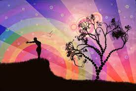

Spirituality is a broad concept with room for many perspectives. In general, it includes a sense of connection to something bigger than ourselves, and it typically involves a search for meaning in life. As such, it is a universal human experience—something that touches us all. People may describe a spiritual experience as sacred or transcendent or simply a deep sense of aliveness and interconnectedness.
Some may find that their spiritual life is intricately linked to their association with a church, temple, mosque, or synagogue. Others may pray or find comfort in a personal relationship with God or a higher power. Still others seek meaning through their connections to nature or art. Like your sense of purpose, your personal definition of spirituality may change throughout your life, adapting to your own experiences and relationships.
The spiritual journey involves first healing and affirming the ego so that positive states are experienced; with secure self-esteem, belief in self-worth and a capacity for love and generosity, a person becomes less constrained by ego defences. An opening of the heart is an essential aspect of true spirituality. In this regard one may question the spiritual nature of masochistic religious practices such as selfflagellation, which is based on a belief in the wickedness inherent in the body rather than on any real connection with, and therefore compassion for, the body. This illustrates the fact that religion does not always serve the progress of spiritual development but may get side-tracked into practices that create pride, feelings of superiority etc. or else lead to a person becoming bogged down in unworthiness, guilt and shame - all of which emotions are commonly suffered by psychiatric patients. In short, religion will be taken up by a person in a way that inevitably reflects their own level of development and maturity.
Spiritual development requires successive degrees of freedom based on the realisation that thoughts are not facts but simply transient mental phenomena, as indeed are our emotions. Increasing numbers of patients are discovering this through mindfulness-based cognitive therapy, which in bringing a person to the here-and-now creates the mental climate in which this deep spiritual insight can help relieve anxiety and depression. Neuroscientific research is showing that with the practice of mindfulness, the cortex of the brain literally grows, with an increase in grey matter and more gyrification. Could this be the next evolutionary step for humanity, with meditation opening the doorway to changes and developments that we currently term spiritual but which may in future be deemed normal, even basic?
Life can be full of ups and downs, good times and bad. Many people see spirituality as a great way to seek comfort and peace in their life. It can often be practised alongside things like yoga, which ultimately focus on stress relief and release of emotion.
Spirituality is a way of gaining perspective
Spirituality recognises that your role in life has a greater value than what you do every day. It can relieve you from dependence on material things and help you to understand your life’s greater purpose. Spirituality can also be used as a way of coping with change or uncertainty.